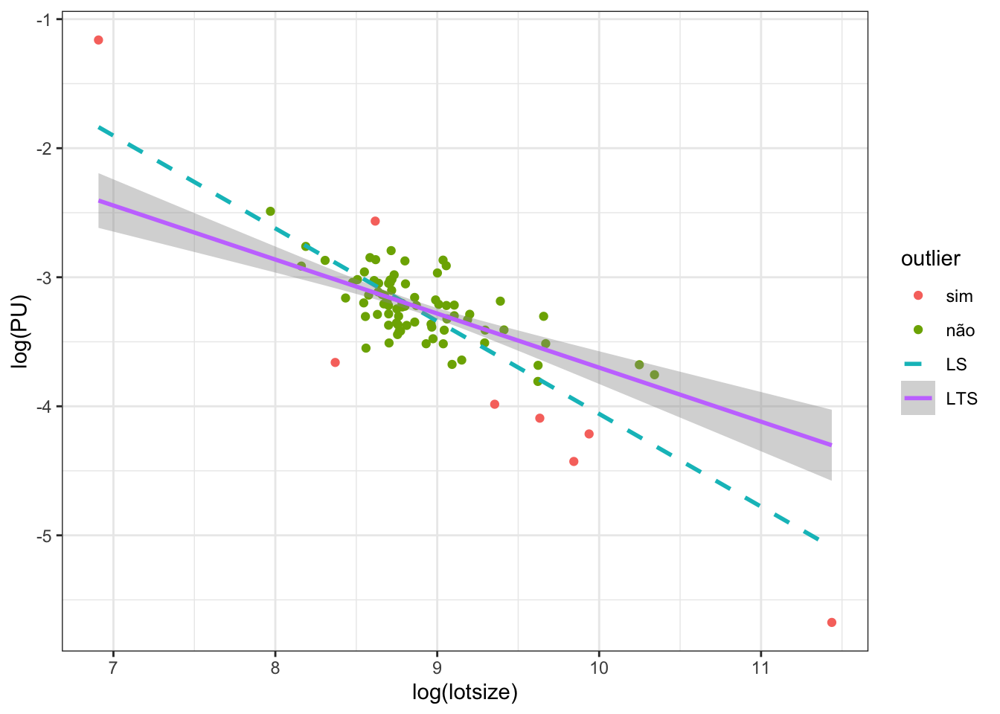
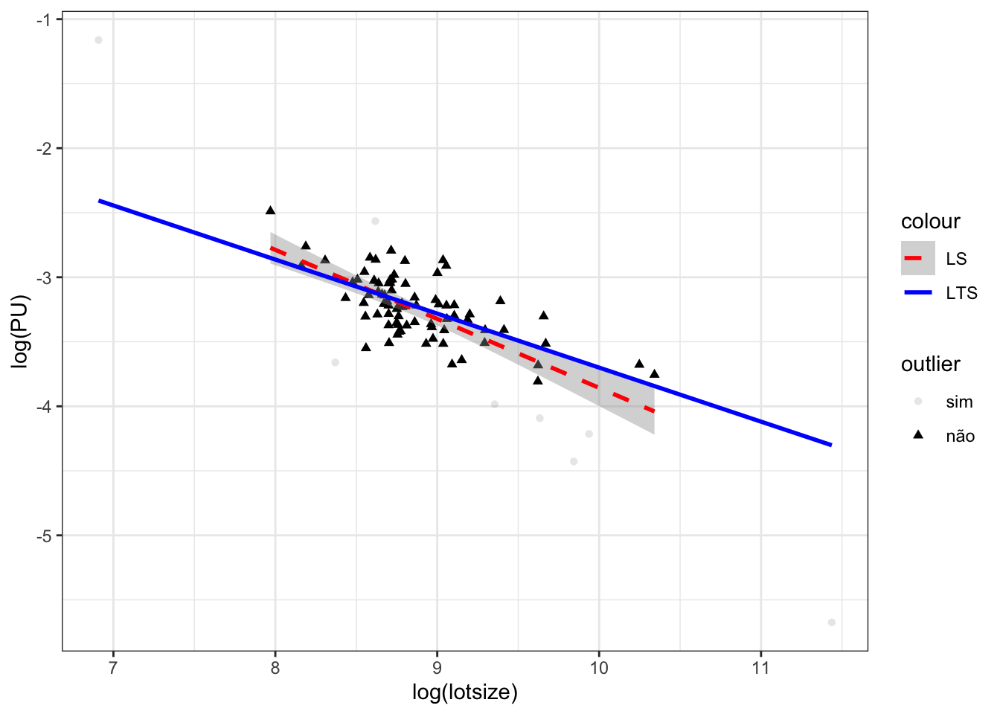
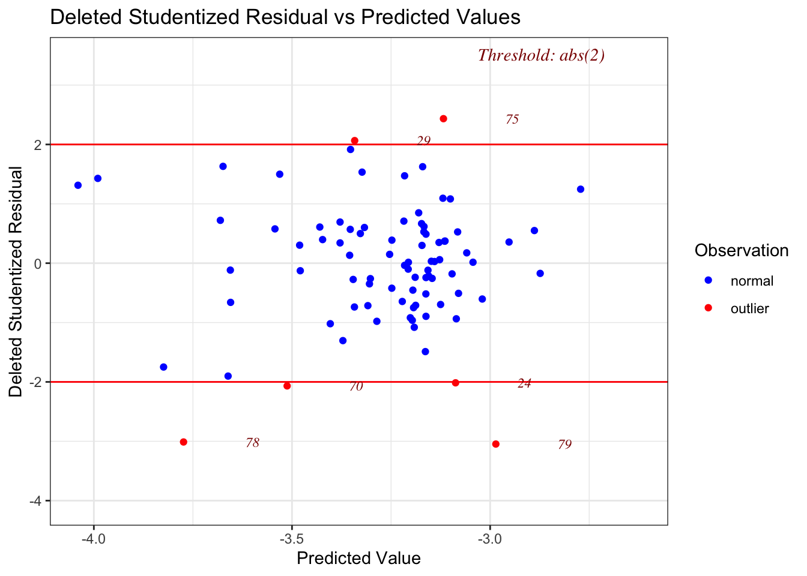
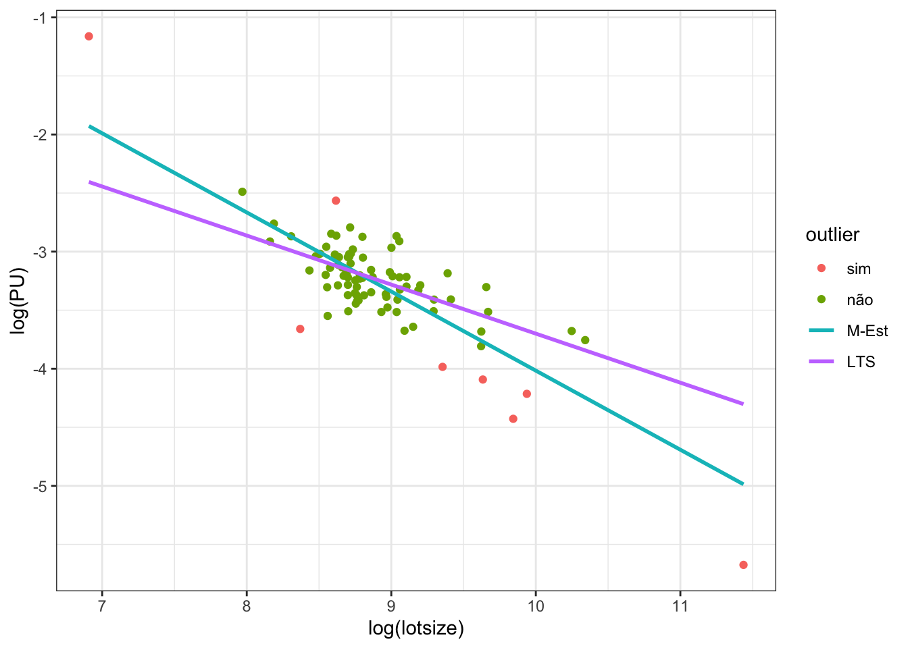
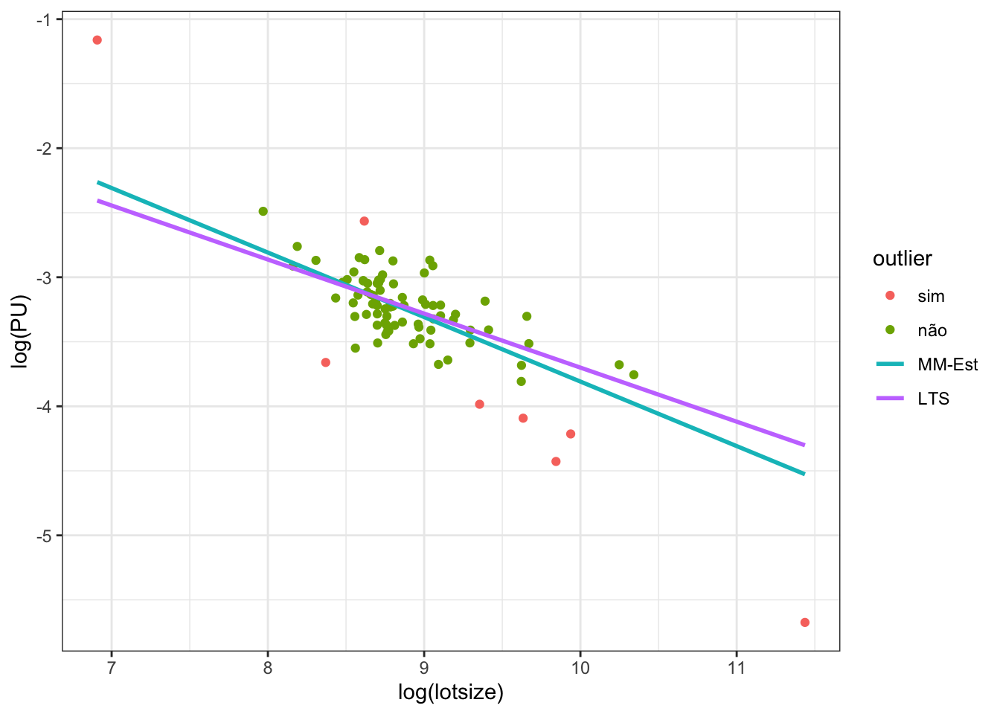

3 Limpeza de dados
A Etapa de Modelagem e Avaliações em Massa é iniciada com a limpeza dos dados oriundos do Observatório do Mercado Imobiliário. Neste capítulo saõ apresentados os métodos utilizados.
3.1 Métodos de limpeza de dados
A limpeza de um conjunto de dados para fins de posterior ajuste de modelos estatísticas pode ser feita com a utilização de diversos métodos. São bem difundidos especialmente os métodos univariados de identificação de outliers, como o clássico método de Chauvenet, que presume a presença de distribuição normal. Outros métodos univariados, por outro lado, são preferíveis pois prescindem da verificação da hipótese da normalidade e também são considerados mais robustos, como o método do boxplot, que classifica como outliers aqueles pontos que se encontram a uma distância de \(1,5 \cdot \text{IQR}\) dos primeiro e terceiro quartis (\(Q_1 \text{ e } Q_3\))1. A Figura 3.1 ilustra graficamente o critério do boxplot para identificação de outliers:
Neste projeto, porém, optou-se pela utilização de métodos multivariados para a limpeza dos conjuntos de dados, tal como o método dos mínimos quadrados aparados. Tal método foi escolhido com o intuito de evitar a remoção desnecessária de muitos falsos outliers da amostra. Para entender, considere-se os bagplots (ou diagramas de saco) das Figuras 3.2 e 3.32.
Na Figura 3.2 podem ser vistos os diagramas de caixa de cada variável, às margens do gráfico principal, em que é possível notar uma assimetria na amostra: existe uma série de pontos à direita da distribuição de ambas as variáveis classificados como outliers pelo critério do boxplot (\(Q_3 + 1,5 \cdot \text{IQR}\)). O gráfico bagplot da Figura 3.2, no entanto, em que 50% dos dados se encontram dentro do primeiro bag, de cor mais escura, e cuja área que separa os outliers dos inliers é exibida em cor cinza-clara, mostra que apenas 4 pontos foram classificados como outliers. Note-se ainda que dois dos pontos classificados como outliers pelo critério do bagplot não foram identificado pelo critério do boxplot.
Já na Figura 3.3, em que as variáveis explicativas apresentam distribuição mais simétrica, pois as variáveis encontram-se transformadas para a obtenção da normalidade, pode-se notar que o critério dos boxplots implicaria remover uma série de pontos em ambos os lados da distribuição das variáveis, enquanto o critério do bagplot mostra que, novamente, apenas alguns pontos precisam de fato ser removidos da amostra para uma boa modelagem.


Os conceitos de profundidade estatística e mediana profunda podem ser estendidos para outras dimensões. O algoritmo para o cômputo eficiente destas estatísticas pode ser visto em STRUYF; ROUSSEEUW (2000).
O método dos mínimos quadrados aparados, como veremos na próxima seção, ajusta um modelo de regressão robusta a aproximadamente 50% dos pontos mais “importantes” da amostra, classificando como potenciais outliers os pontos que apresentam resíduos padronizados maiores, em módulo, a 2,5, calculados em relação ao modelo ajustado com esses dados mais “importantes”.
3.1.1 Breakdown point
Segundo DAVIES; GATHER (2007), uma das melhores medidas de robustez é o breakdown point (\(\boldsymbol \epsilon^*\)), conceito desenvolvido por HODGES (1967) e extendido por HAMPEL (1971) e DONOHO; HUBER (1983):
The breakdown point is one of the most popular measures of robustness of a statistical procedure. Originally introduced for location functionals (Hampel, 1968, 1971) the concept has been generalized to scale, regression and — with more or less success — to other situations.
Grosso modo, o breakdown point de um estimador é o menor percentual de dados contaminantes que levam o estimador a assumir arbitrariamente grandes valores, ou valores aberrantes. Para compreender, tome-se o caso da estimação da tendência central, \(\mu\), de um conjunto de dados com distribuição supostamente normal. A média aritmética, \(\bar x\), neste caso, é um estimador com \(\boldsymbol \epsilon^* = 0\), pois basta um dado amostral contaminante para produzir estimativas totalmente equivocadas para o parâmetro. No outro extremo encontra-se a mediana amostral, \(\tilde x\), apresenta \(\boldsymbol \epsilon^* = 0,5\), ou seja, a mediana é um estimador robusto para o parâmetro central da distribuição, desde que menos de 50% dos dados amostrais sejam contaminantes.
3.1.2 Mínimos Quadrados Ordinários
Para melhor compreensão do método dos mínimos quadrados aparados, deve-se contextualizá-lo com o método clássico dos mínimos quadrados ordinários.
Seja então o modelo usual de regressão da Equação 3.1, em que \(\mathbf y\) é um vetor que contém uma variável dependente a ser explicada; \(\mathbf X\) uma matriz que contém em suas colunas uma ou mais variáveis explicativas; e \(\boldsymbol \beta\) é um vetor de coeficientes a ser estimado.
\[ \mathbf y = \mathbf X\boldsymbol \beta + \mathbf r \tag{3.1}\]
Então o método dos mínimos quadrados ordinários consiste na minimização de uma função objetivo, \(S\), nesta caso a função soma do quadrado dos resíduos, \(S(\boldsymbol\beta) = \sum r_i^2(\boldsymbol\beta)\). Ou seja, no método dos mínimos quadrados ordinários busca-se minimizar:
\[ \hat\beta_{\text{OLS}} = \min S(\boldsymbol \beta) = \arg \underset{\beta} \min\sum_{i=1}^n r_i^2(\boldsymbol \beta) \tag{3.2}\]
Em que \(\mathbf r\) é um vetor dos resíduos do modelo da Equação 3.1, ou seja:
\[ \mathbf r = \mathbf y - \mathbf X \boldsymbol \beta \tag{3.3}\]
Assim, a Equação 3.2 poderia ser escrita, se uma maneira mais formal, em notação matricial, como abaixo:
\[ = \arg \underset{\beta} \min\sum_{i=1}^n (\mathbf y - X\boldsymbol \beta)^2 \tag{3.4}\]
Deste ponto em diante, contudo, para fins de simplificação do entendimento, adota-se a seguinte notação, reescrevento a Equação 3.2:
\[ \hat\beta_{\text{OLS}} = \arg \underset{\beta} \min \sum_{i=1}^n r_i^2 \tag{3.5}\]
3.1.3 M-Estimadores
Os métodos robustos consistem em variações em torno do processo de minimização dos resíduos. Enquanto no método clássico dos mínimos quadrados ordinários é minimizada a soma do quadrado dos resíduos, no método dos mínimos resíduos absolutos, proposto por EDGEWORTH (1887), baseado no método gráfico de Boscovich, tem-se:
\[\hat\beta_{\text{LAD}} = \arg \underset{\beta} \min \sum_{i=1}^n |r_i| \tag{3.6}\]
Segundo ROUSSEEUW (1984), o próximo passo no progresso dos métodos de regressão robustos se deu com o surgimento dos M-Estimadores, baseados na idéia da aplicação de uma função, \(\rho\), dos resíduos, diferente da função quadrática, como ilustrado na Equação 3.7.
\[\boldsymbol{\hat\beta_{\text{RLS}}} = \arg \underset{\beta} \min\sum_{i=1}^n \rho(r_i) \tag{3.7}\]
É fácil perceber que a intenção com os M-Estimadores foi contornar o fato que a função absoluto, \(|r(t)|\), não possui propriedades desejáveis (não é uma função derivável em \(t = 0\), o que dificulta o processo de minimização). Assim, HUBER (1964) propôs inicialmente a aplicação da função da Equação 3.8, que consiste em utilizar, para os menores resíduos, em módulo ( \(|r_i| \leq k\)), a função quadrática e, somente a partir de um valor \(k\) (ou seja, para \(|r_i| > k\)), a função absoluto.
\[ \rho_{Huber}(t) = \begin{cases} \frac{1}{2} t^2 & |t| \leq k\\ k|t| - \frac{1}{2} k^2& |t| >k \end{cases} \tag{3.8}\]
Diversas outras funções foram propostas para a Equação 3.7, como a função biweight de Tukey. No entanto, tanto no método dos mínimos desvios absolutos da Equação 3.6, quanto nos M-Estimadores, persite à sensibilidade à presença de outliers nas variáveis explicativas, i.e., os M-Estimadores são eficazes apenas em lidar com a presença de outliers na variável dependente (no caso, imóveis de valores observados muito mais altos ou mais baixos do que os que seria previstos pelo mercado). Desta forma, tanto o estimador MQO da Equação 3.2 como os M-Estimadores possuem breakdown point \(\boldsymbol \epsilon^* = 0\).
3.1.4 Mínimos Quadrados Aparados
Então ROUSSEEUW (1984), para contornar o problema dos outliers presentes nas variáveis explicativas, propôs dois estimadores robustos alternativos aos M-Estimadores: o estimador LMS (Least Median of Squares), que minimiza a mediana dos resíduos quadráticos (Equação 3.9), e o estimador LTS (Least Trimmed Squares, ou Mínimos Quadrados Aparados), que minimiza o quadrado dos resíduos, porém apenas para os “bons” pontos da amostra:
\[ \beta_{LMS} = \arg \underset{\beta} \min \mathrm{med \,} r_i^2 \tag{3.9}\]
\[ \beta_{LTS} = \min_{\beta}\sum_{i=1}^h (r^2)_{(i)} \tag{3.10}\]
Em que \((r^2)_{(1)} < (r^2)_{(2)} < \ldots < (r^2)_{(n)}\) são os resíduos quadráticos ordenados. Resumidamente: o estimador LTS da Equação 3.10 utiliza aproximadamente apenas \(h\) pontos da amostra (em geral, \(h \approx n/2\)) para um ajuste mais estável, e calcula os resíduos de cada ponto da amostra em relação à esta reta de regressão robusta. Após o cálculo dos resíduos os pontos são classificados como “bons” (pontos cujos resíduos padronizados são menores que 2,5, em módulo) ou “ruins” (pontos cujos resíduos padronizados são maiores ou iguais a 2,5).
O estimador LTS é famoso por apresentar breakdown point igual a 50% (máximo)3, isto é, contanto que menos de metade dos pontos do conjunto de dados em análise consista de outliers, o algoritmo é eficaz em identificar esses pontos anômalos e ajustar um modelo que reflete o padrão verdadeiro dos dados.
Para ilustrar, o gráfico da Figura 3.4 mostra como a presença de outliers, influenciam a estimação do coeficiente angular do modelo, mostrando um efeito maior (reta vermelha) do que o efeito “real” da variável área sobre os preços unitários (reta verde). Já a Figura 3.5 mostra que a reta de regressão linear ordinária (em vermelho) ajustada apenas aos pontos centrais da amostra (i.e., sem a inclusão dos dois pontos extremos), seria já suficiente para a obtenção de um modelo de regressão relativamente bem ajustado, com inclinação próxima da obtida pelo modelo robusto. No entanto, a presença de


No entanto, a persistência dos outliers mesmo após a remoção dos dois pontos mais extremos ainda altera significativamente a inclinação da reta. O gráfico da Figura 3.6 mostra que, mesmo após a remoção dos dois outliers extremos, ainda restam 6 pontos com resíduo studentizado com valor maior do que 2, em módulo.

É importante destacar que não se trata de um processo para exclusão automática de outliers, no entanto: a aplicação do algoritmo LTS não dispensa a análise dos pontos classificados como outliers pelo avaliador, que deve decidir se retira realmente todos os pontos flagados pelo algoritmo.
Ainda, é importante destacar que alguns M-estimadores podem não apresentar bons resultados quando os outliers encontram-se na variável explicativa. A Figura 3.7 mostra que o M-estimador apresenta resultado muito parecido com o obtido pelo método dos mínimos quadrados ordinários, distanciando-se da solução mais robusta, obtida pelo método dos mínimos quadrados aparados (LTS).

Já os MM-Estimadores podem ser tão robustos quanto o método dos mínimos quadrados aparados, como ilustra a ?fig-LTSvsMM: ambas os modelos apresentam praticamente a mesma inclinação da reta, indicando que o MM-estimador também é robusto à outliers nas variáveis explicativas, assim como o estimador de mínimos quadrados aparados. A próxima seção detalha o que são os MM-estimadores.

3.1.5 MM-estimadores
Os MM-estimadores foram primeiramente propostos por YOHAI (1987).
Assim como o estimador de mínimos quadrados aparados, os MM-estimadores podem apresentar o valor máximo para o breakdown-point (0,5), na condição em que os resíduos tenham distribuição normal (YOHAI, 1987).
Segundo YOHAI (1987), os MM-estimadores são obtidos em três estágios. No primeiro, um modelo de regressão robusta com alto breakdown-point, como o dos mínimos quadrados aparados, é estimado. Com o modelo obtido no primeiro estágio, então, são computados os resíduos e, com estes, por sua vez, um estimador robusto de escala dos resíduos é obtido.
Neste projeto, o objetivo com a utilização dos métodos robustos é a mera limpeza dos dados, o que possibilita a utilização de outros métodos a posteriori com mais segurança. Portanto, não foi adotada a utilização dos *MM-Estimadores**.
Lembrando que \(\text{IQR}\) é a medida de dispersão denominada de intervalo interquartil, i.e. \(\text{IQR} = Q_3 - Q_1\).↩︎
O bagplot é uma generalização do boxplot para duas dimensões, proposto por ROUSSEEUW et al. (1999), baseado nos conceitos de Profundidade de Tukey, ou Profundidade do meio-espaço e na mediana profunda, ou mediana bivariada (TUKEY, 1975).↩︎
Quando são utilizados para o ajuste do modelo apenas aproximadamente 50% dos dados, i.e., quando \(h = (n/2) + 1\).↩︎